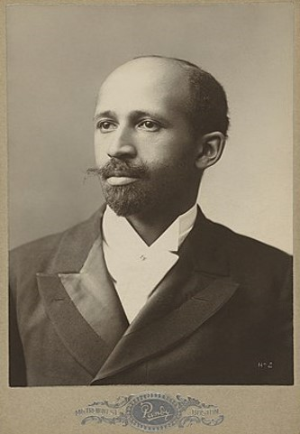

THE DUBOIS ORIGINAL (LEFT) AND THE NEW PLOT (RIGHT) ARE GOING TO BE SHOWN IN THE DISPLAY BELOW.
CLICK AND/OR DRAG THE SLIDER TO REVEAL SECTIONS OF THE PLOTS.
CLICK AND/OR DRAG THE SLIDER TO REVEAL SECTIONS OF THE PLOTS.
R using ggplot and many extensions. Furthermore, I used this opportunity to present data on racial inequality and Black achievements in my homeland, Brazil.

ORIGINAL TITLE: THE GEORGIA NEGRO
NEW TITLE: THE AFRO-BRAZILIANS